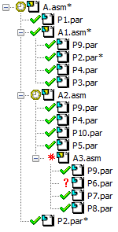
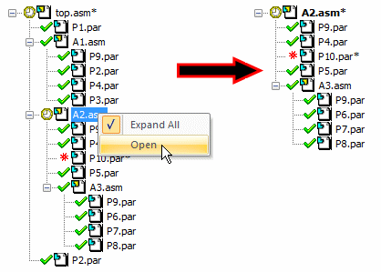

Component Tracker command
Displays the Component Tracker dialog box to view and update the status of assembly components. The Component Tracker checks out of date status from the active assembly level down, and reports the status of each component in the assembly. The entire structure is tracked, including part copies. However, the command does not track or check inter-part out of date conditions. Non-Solid Edge objects are not displayed in the Component Tracker.
In the managed environment, the Component Tracker does not trigger the download of reference occurrences. These are reported as missing files if they are not available on disk. Reference occurrences are ignored for update and save operations.
-
This command is disabled until the active document is saved at least once.
-
There is no undo for update.
-
The Component Tracker update ignores any limited update settings. The Component Tracker save ignores any limited save settings.
Below is an expanded view of an assembly showing an example of out of date and missing assembly components.

Component Tracker legend:
|
One or more documents have geometric changes that are not yet reflected at this level. An update is required. |
|
|
Document is up to date in memory. May need to be updated to disk. |
|
|
Document has changes and is causing higher level documents to be out of date. |
|
|
Document is not found. |
|
|
Document has changes in memory that have not been saved. |
You can update parts starting at a lower level in the Component Tracker dialog box using the Open command on the shortcut menu of a assembly component.
